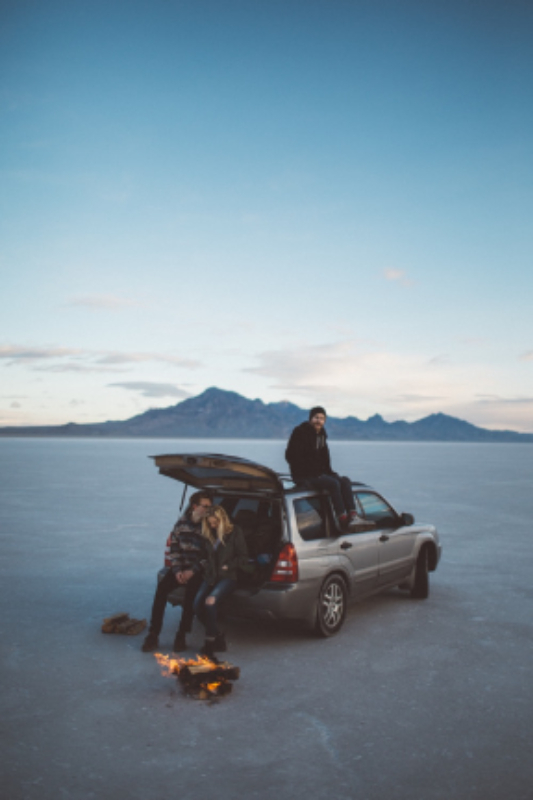
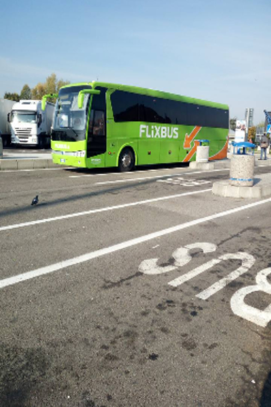

ARRANCAMOS EL VIAJE ?
Elegir que medio de transporte utilizar para viajar, depende de mucho factores como el tiempo , la plata y las preferencias.
Por eso acá podrás leer algunas de las distintas formas que hay para viajar viajar,sus ventajas y desventajas para que elijas la que más se adapte a vos!


VIAJAR EN AVIÓN
Si queres viajar en avión, arraga lápiz y papel para hacer la famosa LISTA DE PROS Y CONTRAS,
para que tomes una buena decisión que se adapte a tus planes.
Ventaja de viajar en avión #1 - TIEMPO
Si tenes un viaje de tiempos acotados esta es una buena opción. El tiempo es una de sus principales ventajas, los vuelos entre paises de Europa por ejemplo, demoran entre 1hs y 3hs, viajar de Argentina al norte de Brasil tiene una demora de máximo 8hs, cuando sólo para ir al sur del mismo país demorarías aproximadamente 20hs.
Desventaja de viajar en avión #1 - BUROCRACIA
Si bien es una hora de trayecto de viaje, puede convertirse en dos o tres. Tienes que llegar 2 antes horas para hacer check in y pasar seguridad. Al aterrizar te tomará una hora en buscar tu valija,
Esto considerando que no tengas retrasos.
Otra cuestión a tener en cuenta es el peso y costo de facturación de valijas, tema NO menor a la hora de tomar una decisión.
Ventaja de viajar en avión #2 - LOW COST
En los últimos años surgieron las aerolineas low cost,que nos permiten conseguir pasajes de vuelos al mismo precio que un ticket de tren, o colectivo con una duración de viaje mucho menor.
Desventaja de viajar en avión #1 - LEJANíA
Otra cuestión a tener en cuenta a la hora de tomar esta decisión es la lejanía de los aeropuertos, a diferencia de las estaciones de tren o onmibus los aerpuertos suelen encontrarse a las afueras de la ciudad, lo que implica siempre un gasto de traslado hacía el centro el lugar donde se encuentren a alojados. Por lo que implica más tiempo y gasto.
VIAJAR EN AUTO
Si queres viajar en auto, arraga lápiz y papel para hacer la famosa LISTA DE PROS Y CONTRAS,
para que tomes una buena decisión que se adapte a tus planes.
Ventaja de viajar en auto #1 - LIBERTAD
Si sos de los que prefieren improvisar durante el viaje, este es tu medio de transporte. Sin horarios para salir ni paradas obligatorias podes ajustar tu recorrido día a día, según si encontras algo más interesante por la ventanilla de lo que esperas encontrar en el destino.
Desventaja de viajar en auto #1 - CANSANCIO
Manejar implica tener toda la atención centrada en la ruta por lo que, el rato del viaje que en otro medio de transporte puedes utilizar para desconectar y dormir , en este caso debes invertir más energía en conducir y llegar al destino, por lo que quizá aproveches menos el tiempo de vacaciones.
Ventaja de viajar en auto #2 - EQUIPAJE Y BUROCRACIA
No importa el tamaño ni el peso de la valija siempre que quepa en el baúl. Jugando con el espacio disponible puedes llevar todo lo que necesites, sin restricciones.
Esto incluye comida, líquidos y objetos electrónicos que podrían dificultarte el subir a un avión. Además las valijas siempre van con vos , lo que supone que no se perderán durante el camino.
Para llevar a cabo un viaje en auto hace falta mucha menos previsión y papeleo que si queremos viajar en tren, avión o barco. No necesitamos comprar billetes, no hay que hacer filas para facturar, ni calcular si nos dará tiempo a llegar siguiente avión en la próxima escala.
Desventaja de viajar en auto #2 - ESTACIONAMIENTO
A la hora de viajar en auto no podemos dejar de hablar del costo de estacionamiento o parking a la hora de llegar a destino o cualquier actividad que querramos hacer.
Además de tener en cuenta que a diferencia de los viajes en tren o avión estas siempre condicionado al tráfico, a las condiciones de ruta y muchas veces del clima.
Por último hay que tener en cuenta un último gasto, el pago de peajes.
VIAJAR EN COLECTIVO
Si queres viajar en colectivo, arraga lápiz y papel para hacer la famosa lista de pros y contras,
para que tomes una buena decisión que se adapte a tus planes.
Ventaja de viajar en colectivo #1 - PRECIO ECONÓMICO
Más barato que el avión o el tren. Esta es la principal ventaja de los colectivos, en general siempre será de el medio de transporte más barato que existe.
También si tenes un viaje de larga duración y viajas de noche, podes ahorrarte una noche de alojamiento.
Desventaja de viajar en colectivo #1 - DURACIÓN
Los tiempos de viaje son mayores. Si planeas recorrer grandes distancias entonces el autobús no es lo recomendable pues en general sus tiempos de viaje son mayores , por el simple hecho que tiene que esquivar el tráfico de las ciudades o carreteras esto ya aumenta significativamente su tiempos.
Ventaja de viajar en colectivo #2 - PASAJES
Puedes comprar el boleto en el momento. Otra gran ventaja es que a diferencia de comprar boletos de avión o de tren los precios de los autobuses no varían si los compras un día o un mes antes.
Desventaja de viajar en colectivo #2 - INCOMODIDAD
Incomodidad de los asientos. Las aerolíneas de bajo costo y los autobuses tienen algo en común, un espacio diminuto entre sus asientos. La única diferencia es que probablemente estés menos tiempo en un avión que en un autobús.
Si eres una persona alta el autobús es sin duda la peor opción para tu viaje.
VIAJAR EN TREN
Si queres viajar en tren, arraga lápiz y papel para hacer la famosa LISTA DE PROS Y CONTAS,
para que tomes una buena decisión que se adapte a tus planes.
Ventaja de viajar en tren #1 - PUNTUALIDAD
En algún lado leí (olvidé dónde pero basado en mi experiencia puedo decir que es verdad) que los trenes tienen una puntualidad del 90% en promedio, mientras que los aviones es tan sólo de un 68% a 78%. En todos los viajes que he hecho puedo recordar varias veces que un avión se ha retrasado o cancelado .
Desventaja de viajar en tren #1 - EQUIPAJE PESADO
Si sos de las personas que en definitiva no puede empacar ligero entonces vas a tener que tener cuidado con los trenes.
Trasladarte en tren es una maravilla pero no es del todo amigable con los pasajeros que traen mucho equipaje pues literalmente vos tendrás que hacerte cargo de él.
En el tren hay compartimientos especiales para colocar las valijas grandes pero una vez más, sos vos quien sube y baja esas valijas del tren , a diferencia del avión que vas al mostrador, la registras y listo
Ventaja de viajar en tren #2 - COMODIDAD
Para dormir puedes tener una cama. ¿Intentaste dormir en un colectivo? Incluso aquellos con “más espacio” para recostarte la verdad es que son pequeños e incómodos. Los trenes con camas son amplios y cómodos.
Incluso los trenes que no tienen camas, en sus espacios comunes suelen ser mucho más amplios.
Dsventaja de viajar en tren #2 -INCOMODIDAD SOCIAL
Para dormir puedes tener una cama. ¿Intentaste dormir en un colectivo? Incluso aquellos con “más espacio” para recostarte la verdad es que son pequeños e incómodos. Los trenes con camas son amplios y cómodos.
Incluso los trenes que no tienen camas, en sus espacios comunes suelen ser mucho más amplios.
Dsventaja de viajar en tren #2 -INCOMODIDAD SOCIAL
Viajar en tren es socialmente incómodo. Si no sos una persona sumamente sociable entonces el tren puede ser todo un reto para vos. En la mayoría de las ocasiones los pasajeros están sentados uno frente al otro lo que hace que esas miradas incómodas sean inevitables, lo mejor para evitar estas situaciones es dormirte, leer o ver por la ventana.